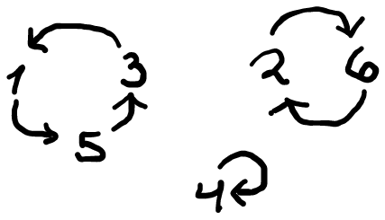

Riddler: The Riddler Gift Exchange?
My solution to this week’s riddler. (See more of my Riddler solutions here.)
The Problem
From Gary Yane comes a puzzle that’s just in time for Christmas:
Every Christmas, Gary’s family has a gift exchange. And every year, there is a big fight over how much folks should spend on the gifts. This year, they decided to pair up. So if Virginia gives Justin a gift, then Justin gives Virginia a gift. This way, while there will still be arguments, only two people will be involved in each argument.
There are 20 people in the gift exchange. In the first round, everyone writes down the name of a random person (other than themselves) and the names go in a hat. Then if two people randomly pick each other’s names out of that hat, they will exchange gifts, and they no longer participate in the drawing. The remaining family members go on to round two. Again, they write down the name of anyone left, and again, any two people who pick each other exchange gifts.
This continues until everyone is paired up. And yes, if exactly two people remain, they still go through the process of selecting each other, even though they know who their partner will be.
On average, what is the expected number of rounds until everyone is paired up?
I misread the statement when I first read this, which resulted in me solving the wrong problem…. :(. It turns out that the actual problem is difficult to solve analytically, and without resorting to simulation I wasn’t able to come up with a solution.
(Edit: After posting this, I found that no other solvers were able to find a solution that didn’t rely on simulation, so I don’t feel bad. Also, other solvers played around with my same misinterpretation of the problem!)
However! My misinterpretation of the problem provided me with a similar problem that, although still relatively difficult, I was able to find an analytic solution to!
In the original problem statement, each participant writes down any name other than their own name. When I first read this, I thought that each participant writes exactly their own name. This minor variation makes the problem still interesting, but much easier to solve.
So, for the rest of the post I will focus on the solution to the variant problem where each participant writes their own name. Putting the names into the hat and redistributing them to the participants is essentially a standard permutation of the names. The number of outcomes different outcomes at the end of a given round is just the number of permutations of the participants. What makes this easy is that we guarantee that each name is in the hat exactly once, something that doesn’t happen in the original problem statement.
Solution (to the variant problem)
In the variant problem that I considered, each participant writes their own name on the slip of paper and puts it into the hat. The names are then randomly permuted and given back to the participants.
Suppose there are \(n\) initial participants. (Note that \(n\) must be even or the game doesn’t work.) Miraculously, it turns out that the expected number of rounds that must be played until completion is simply \(n\).
That is, if we let \(E_n\) denote the expected number of rounds that must be played in a game that starts with \(n\) players until every one is paired off, it holds that
\[ E_n = n \]
when \(n\) is even (and \(E_n=\infty\) otherwise).
Despite the solution having a simple expression, I was unable to come up with a simple argument. I have a long convoluted method to determine this answer, that involves counting certain types of permutations. The proof is convoluted, but the simple expression for the answer makes me believe that perhaps there is a simpler way… oh well.
Permutations and cycles
Suppose there are \(n\) participants at the start of a given round. We may identify the names with the numbers \(1\) to \(n\). The set of permutations of \(\lbrace 1,2,\dots, n\rbrace\) is denoted \(S_n\) (i.e., the symmetric group of \(n\) elements). Now, when does a permutation of the participants have two people perfectly pair up? This requires two people to take each other’s names. We can express this mathematically by saying that the permutation has a cycle of size 2.
Let’s recall now the cycle representation of a permutation. Consider the permutation \(\pi\in S_6\) defined by the following diagram:

We can picture this in our game as person 1 drawing person 5’s name, person 5 drew person 3’s name, and person 3 drew person 1’s name. Person 4 drew their own name while participants 2 and 6 drew each others names. In this way, we can see that the permutation splits out nicely into three disjoint cycles. In cycle notation, we can express this permutation as
\[ (153)(26)(4), \]
which has cycles of size 1, 2 and 3. The length of the cycle is the number of elements it cycles through. A cycle of length \(k\) is called a \(k\)-cycle. The number of pairs that form in a given round is equal to the number of disjoint \(2\)-cycles in the permutation! In this example, players 2 and 6 pair off in the gift exchange, and the four remaining players (1, 3, 4, and 5) that are not part of a \(2\)-cycle continue on to the next round and place their names back in the had.
Pairing up
Suppose at the start of a round there are \(n\) people remaining in the group of yet-to-be-paired-off participants. A random permutation of the \(n\) names is chosen as the participants draw names out of the hat. If the permutation has \(k\) disjoint \(2\)-cycles, then \(2k\) of those participants pair off in to \(k\) pairs and there are \(n-2k\) participants remaining in the pool in the next round.
When there only two people remaining, there are two possibilities that each occur with 50% probability: either they choose each other’s names (pairing up) or they choose their own names and continue to another round. Since each round has a 50% chance of ending the game and a 50% chance of continuing to another round, the expected number of rounds to be had once their are two people remaining is
\[ 1 + \frac{1}{2} + \frac{1}{2^2} + \cdots = 2. \]
Now, the question we want to answer is: If there are \(n\) participants initially, what is the expected number of rounds until all participants have been paired off this way? We can set this problem up mathematically as follows.
For non-negative integers \(n\) and \(k\): - Let \(p_{n,k}\) be the probability that a randomly selected permutation of \(n\) elements contains exactly \(k\) disjoint \(2\)-cycles, and - Let \(E_n\) denote the expected number of rounds that the game will last when it begins with \(n\) participants. When \(n=0\), there is no game to be played as there are no remaining participants to pair up and thus \(E_0 = 0\). However, if \(n\) is odd then it will be impossible to pair off everybody in the group, and thus \(E_n\) is infinite. We have already determined that \(E_2=2\).
Otherwise, if \(n\) is even and positive, then \(n=2m\) for some positive integer \(m\). In a round that starts with \(2m\) players there will be some number \(k\in\lbrace 0,1,\dots, m\rbrace\) of pairs that form, and the next round starts with \(E_{2m-2k}\) players. It follows that
\[ E_{2m} = 1 + \sum_{k=0}^{m} p_{2m,k} E_{2(m-k)}. \]
Slightly rearranging and solving for \(E_n\) (and using the fact that \(E_0=0\)), we find that
\[ E_{2m}= \frac{1}{1-p_{2m,0}}\left(1 + \sum_{k=1}^{m-1}p_{2m,k}E_{2(m-k)}\right). \]
It remains now to find an expression for \(p_{n,k}\). If we let \(a_{n,k}\) denote the number of permutations of \(n\) elements that contain exactly \(k\) distinct \(2\)-cycles, then we may write
\[ p_{n,k} = \frac{a_{n,k}}{n!}. \]
The latter half of this blog post will be devoted to proving the following claim.
Claim. Let \(n\) and \(k\) be nonnegative integers. The number of permutations of \(n\) elements that contain exactly \(k\) distinct \(2\)-cycles is given by \[a_{n,k} = \frac{n!}{2^kk!}\sum_{j=0}^{\lfloor n/2-k\rfloor}\frac{(-1)^{j} }{2^j j!}.\]
The proof of this claim will follow later, but for now we can carry onward. The desired probability may therefore be expressed as
\[ p_{n,k} = \frac{1}{2^k k!}\sum_{j=0}^{\lfloor n/2-k\rfloor}\frac{(-1)^{j} }{2^j j!}. \]
Now, when \(n=2m\), this simplifies to
\[ p_{2m,k} = \frac{1}{2^k k!}\sum_{j=0}^{m-k}\frac{(-1)^{j} }{2^j j!}. \]
For a sanity check, we can verify for a fixed \(m\) that the sum of all of these probabilities equals one. Indeed, if there are \(2m\) people, the numbers of different pairs that can form are \(0,1,\dots m\), and
\[ \begin{align*} \sum_{k=0}^m p_{2m,k} &= \sum_{k=0}^m\sum_{j=0}^{m-k}\frac{(-1)^j}{2^{k+j}k!j!}\\ &= \sum_{k=0}^m\sum_{j=0}^{m-k}\frac{(-1)^j}{2^{k+j}(k+j)!}\binom{k+j}{j}\\ & = \sum_{a=0}^m\sum_{j=0}^a \frac{(-1)^j}{2^aa!}\binom{a}{j}\\ & = \sum_{a=0}^m\frac{1}{2^aa!}\sum_{j=0}^a (1)^{a-j}(-1)^j\binom{a}{j}\\ & = 1 + \sum_{a=1}^m\frac{1}{2^aa!}(1-1)^a\\ & = 1. \end{align*} \]
We proceed now with the statement of the main result.
Proposition. Let \(E_n\) denote the expected number of rounds in a game that starts with \(n\) players. It holds that
\[ E_{2m} = 2m \]
for all \(m\in\mathbb{N}\).
Proof. We proceed by induction. As discussed above, the trivial game requires no rounds so \(E_0=0\). Let \(m\in\mathbb{N}\) and suppose that \(E_{2k} = 2k\) holds for all integers \(k\in\lbrace 0,1,\dots,m\rbrace\). Note that
\[\tag{$\ast$} E_{2m} = \sum_{k=1}^m p_{2m,m-k}E_{2k}= 2m \]
by assumption. Also note that for each \(k\in\mathbb{N}\) we have that
\[\tag{$\ast\ast$} \begin{align*} p_{2(m+1),k} &= \frac{1}{2^kk!}\Bigg(\sum_{j=1}^{m-k}\frac{(-1)^j}{2^j j!} + \frac{(-1)^{m+1-k}}{2^{m+1-k}(m+1-k)!}\Bigg)\\ & = p_{2m,k} - \frac{(-1)^{m-k}}{2^{m+1}(m+1)!}\binom{m+1}{k} \end{align*} \]
and in particular
\[\tag{$\ast\ast\ast$} p_{2(m+1),0} = p_{2m,0} - \frac{(-1)^{m}}{2^{m+1}(m+1)!}. \]
Note that
\[ \begin{align*} \sum_{k=1}^{m}p_{2m,m+1-k}E_{2k} & = \sum_{k=0}^{m-1}p_{2m,m-k}E_{2k+2}\\ & = \sum_{k=0}^{m-1}p_{2m,m-k}(2k+2)\\ & = \sum_{k=0}^{m-1}p_{2m,m-k}(2k) +2\sum_{k=0}^{m-1}p_{2m,m-k}\\ & = \sum_{k=0}^{m-1}p_{2m,m-k}E_{2k} + 2\big(1-p_{2m,0}\big)\\ & = \big(E_{2m} - p_{2m,0}E_{2m}\big) + 2\big(1-p_{2m,0}\big)\\ & = (E_{2m}+2)\big(1-p_{2m,0}\big)\\ & = (2m+2)\big(1-p_{2m,0}\big), \end{align*} \]
where we make use of (\(\ast\)).
Also,
\[ \begin{align*} \sum_{k=1}^{m}\frac{(1)^{k+1}}{2^{m+1}(m+1-k)!k!}E_{2k} & = \frac{1}{2^{m+1}} \sum_{k=1}^{m}\frac{(-1)^{k-1}}{(m+1-k)!k!}E_{2k}\\ &= \frac{1}{2^{m+1}} \sum_{k=1}^{m}\frac{(-1)^{k-1}}{(m+1-k)!k!}(2k)\\ &=\frac{1}{2^{m}} \sum_{k=1}^{m}\frac{(-1)^{k-1}}{(m+1-k)!(k-1)!}\\ &=\frac{1}{2^{m}} \sum_{k=0}^{m-1}\frac{(-1)^{k}}{(m-k)!k!}\\ &=\frac{1}{2^{m}m!} \sum_{k=0}^{m-1}(-1)^{k}\binom{m}{k}\\ &=\frac{1}{2^{m}m!} \Bigg(\sum_{k=0}^{m}(-1)^{k}\binom{m}{k}-(-1)^m\Bigg)\\ &=\frac{(-1)^m}{2^{m}m!} \end{align*} \]
Putting this together using (\(\ast\ast\)) and (\(\ast\ast\ast\)), we have
\[ \begin{align*} \sum_{k=1}^m p_{2(m+1), m+1-k}E_{2k} & = \Bigg(\sum_{k=1}^{m}p_{2m,m+1-k}E_{2k} \Bigg) + \Bigg(\sum_{k=1}^{m}\frac{(-1)^{k+1}}{2^{m+1}(m+1-k)!k!}E_{2k}\Bigg)\\ & = (2m+2)\big(1-p_{2m,0}\big) + \frac{(-1)^m}{2^{m}m!}\\ & = 2(m+1)\big(1-p_{2m,0}\big) -2(m+1) \frac{(-1)^{m+1}}{2^{m+1}(m+1)!}\\ & = 2(m+1)\bigg(1-p_{2m,0} - \frac{(-1)^{m+1}}{2^{m+1}(m+1)!}\bigg)\\ & = 2(m+1)(1-p_{2(m+1),0}). \end{align*} \]
Finally,
\[ \begin{align*} E_{2(m+1)} &= \frac{1}{1-p_{2(m+1),0}}\sum_{k=1}^m p_{2(m+1), m+1-k}E_{2k}\\ &= 2(m+1), \end{align*} \]
as desired. \(\square\)
Proof of the claim: Counting permutations with \(k\) disjoint 2-cycles
The rest of this post is devoted to proving the claim above. Let \(n\) and \(k\) be nonnegative integers. We want to find an expression for \(a_{n,k}\), which denotes the number of permutations in \(S_n\) containing exactly \(k\) disjoint 2-cycles. We may count these permutations by first choosing the \(2k\) elements that will compose the \(k\) pairs that are formed, then count the number of ways those \(2k\) elements can be paired off, and finally count the number of ways that the remaining \(n-2k\) elements can be permuted with no 2-cycles. Hence, one has that
\[ a_{n,k}=\binom{n}{2k}a_{2k,k}a_{n-2k,0}. \]
Note that
\[ a_{2k,k}=\frac{(2k)!}{2^kk!}. \]
To see this, note that we can count the number of ways to partition \(2k\) elements into \(k\) disjoint ordered pairs in two different ways. One way is to partition the \(2k\) elements into \(k\) unordered pairs, then decide on an ordering for each pair. Another way is to choose \(k\) of the \(2k\) elements to be the first elements of each pair, then arrange the remaining \(k\) elements with the chosen \(k\) elements. It follows that \[a_{2k,k}2^k=\binom{2k}{k}k!\]and the result follows. It remains to determine an expression for \(a_{m,0}\) for an integer \(m\).
Permutations with no 2-cycles
Note that \(a_{m,0}\) is the number of permutations of \(m\) elements containing no 2-cycles. To find an expression for this number, for each distinct subset $i,j,2,,m$ of exactly two elements, define \(A_{\lbrace i,j\rbrace}\) as the set of all permutations of $,2,,m$ for which \((ij)\) is a 2-cycle. That is,
\[ A_{\lbrace i,j\rbrace } = \lbrace \pi\in S_m\,:\, \pi(i)=j,\, \pi(j)=i\rbrace . \]
The collection of all permutations in \(S_m\) that have no 2-cycles can be expressed as
\[ S_n\setminus \Bigg(\bigcup_{\substack{i,j\in\lbrace 1,2,\dots,m\rbrace \\i\neq j}}A_{\lbrace i,j\rbrace }\Bigg).\tag{1} \]
The cardinality of this set is equal to \(a_{m,0}\). We will prove that
\[ a_{m,0} = m!\sum_{k=0}^{\lfloor m/2\rfloor}\frac{(-1)^{k} }{2^k k!}. \]
Inclusion–Exclusion Principle
If one wants to count the number of elements in the union \(A\cup B\) of two finite sets \(A\) and \(B\), one way to do this is to use the formula \[\vert A\cup B\vert = \vert A\vert + \vert B\vert - \vert A\cap B\vert .\]This can be observed that $A+B$ is too large, because the elements in the intersection have been double counted. This technique can be generalizes to any finite number of finite sets.
Let $A_a,:, a$ be a finite family of finite sets indexed by some finite index set \(\Omega\). First some notation. For a fixed integer \(k\), the collection of all subsets of \(\Omega\) having exactly \(k\) elements is expressed as
\[ \binom{\Omega}{k} = \lbrace B\subset \Omega\,:\, \vert B\vert =k\rbrace . \]
To count the number of elements in the union of every set in $A_a,:,a$, we can count the number of elements the intersection of every possible subfamily and apply a useful formula. Namely,
\[ \bigg\vert \bigcup_{a\in\Omega}A_a\bigg\vert = \sum_{k=1}^{\vert \Omega\vert }(-1)^{k+1} \sum_{B\in\binom{\Omega}{k}}\bigg\vert \bigcap_{b\in B}A_b\bigg\vert . \]
In words, to count the number of elements in a finite union of finite sets, first sum the cardinalities of the individual sets, then subtract cardinalities of all possible intersections of two different sets, then add back the cardinalities of each possible intersection of three different sets, and so on.
Applying the inclusion–exclusion principle
Let us now use the inclusion–exclusion principle to find an expression for the cardinality of the set in (1). For brevity we use the notation
\[ \Omega_m=\lbrace 1,2,\dots,m\rbrace . \]
For an integer \(k\), we define
\[ B_{m,k} = \displaystyle\binom{\textstyle{\binom{\Omega_m}{2}}}{\textstyle k} \]
as the collection of all sets of \(k\) distinct pairs of elements of \(\Omega_m\). For example,
\[ B_{3,2} = \Big\lbrace \big\lbrace \lbrace 1,2\rbrace ,\lbrace 1,3\rbrace \big\rbrace ,\, \big\lbrace \lbrace 1,2\rbrace ,\lbrace 2,3\rbrace \big\rbrace ,\, \big\lbrace \lbrace 1,3\rbrace ,\lbrace 2,3\rbrace \big\rbrace \Big\rbrace \]
Note that
\[ \begin{align*} \Bigg\vert \bigcup_{\substack{\lbrace i,j\rbrace \in\binom{\Omega_m}{2}}} A_{\lbrace i,j\rbrace } \Bigg\vert = \sum_{k=1}^{\big\vert \binom{\Omega_m}{2}\big\vert }(-1)^{k+1}\sum_{B\in B_{m,k}} \bigg\vert\bigcap_{\lbrace i,j\rbrace \in B}A_{\lbrace i,j\rbrace }\bigg\vert. \end{align*} \]
Now, if a collection \(B\in B_{m,k}\) is not pairwise disjoint then one has that
\[ \bigcap_{\lbrace i,j\rbrace \in B}A_{\lbrace i,j\rbrace } = \emptyset. \]
Indeed, an element of $_m=,2,,m$ cannot be in more than one 2-cycle of a given permutation of \(\Omega_m\). The only non-empty intersections are those where the family \(B\) consists of pairwise disjoint subsets of size 2.
A family \(B\in B_{m,k}\) that is pairwise disjoint is of the form
\[ B = \big\lbrace \lbrace i_1,j_1\rbrace ,\dots,\lbrace i_k,j_k\rbrace \big\rbrace , \]
where the elements \(i_1,\dots,i_k,j_1,\dots,j_k\) are all distinct.
To find the cardinality of \(A_{\lbrace i_1,j_1\rbrace }\cap\cdots\cap A_{\lbrace i_k,j_k\rbrace }\), we count the number of permutations that contain the \(k\) 2-cycles \((i_1,j_1), \cdots, (i_kj_k)\). To do so, we simply count the number of ways that the remaining \(m-2k\) elements can be permuted, and thus
\[ \bigg\vert \bigcap_{\lbrace i,j\rbrace \in B}A_{\lbrace i,j\rbrace }\bigg\vert = (m-2k)!. \]
The number of families \(B\in B_{m,k}\) that are pairwise disjoint is equal to
\[ \binom{m}{2k}a_{2k,k} = \binom{m}{2k}\frac{(2k)!}{2^k k!}, \]
as we may simply count the number of ways to select \(2k\) elements from $,2,,m$ and subsequently decide how to pair up those \(2k\) elements into \(k\) pairs.
It follows that
\[ \begin{align*} \bigcup_{\substack{\lbrace i,j\rbrace \in\binom{\Omega_m}{2}}} A_{\lbrace i,j\rbrace } &= \sum_{k=1}^{\lfloor m/2\rfloor}(-1)^{k+1}\binom{m}{2k}\frac{(2k)!}{2^k k!}(m-2k)!\\ & = m!\sum_{k=1}^{\lfloor m/2\rfloor}\frac{(-1)^{k+1} }{2^k k!} \end{align*} \]
Finally, the number of permutations of $,2,,m$ containing no 2-cycles is equal to
\[ \begin{align*} a_{m,0} &= m! - m!\sum_{k=1}^{\lfloor m/2\rfloor}\frac{(-1)^{k+1} }{2^k k!} \\ &= m!\sum_{k=0}^{\lfloor m/2\rfloor}\frac{(-1)^{k} }{2^k k!}, \end{align*} \]
as desired.
Back to permutations with \(k\) disjoint 2-cycles
We finally return to counting the permutations of \(\lbrace 1,2,\dots,n\rbrace\) that contain exactly \(k\) disjoint 2-cycles. This is
\[ \begin{align*} a_{n,k} & = \binom{n}{2k}a_{2k,k}a_{n-2k,0}\\ & = \binom{n}{2k}\frac{(2k)!}{2^kk!} (n-2k)!\sum_{j=0}^{\lfloor n/2-k\rfloor}\frac{(-1)^{j} }{2^j j!}\\ & = \frac{n!}{2^kk!}\sum_{j=0}^{\lfloor n/2-k\rfloor}\frac{(-1)^{j} }{2^j j!} \end{align*} \]
which proves the claim.